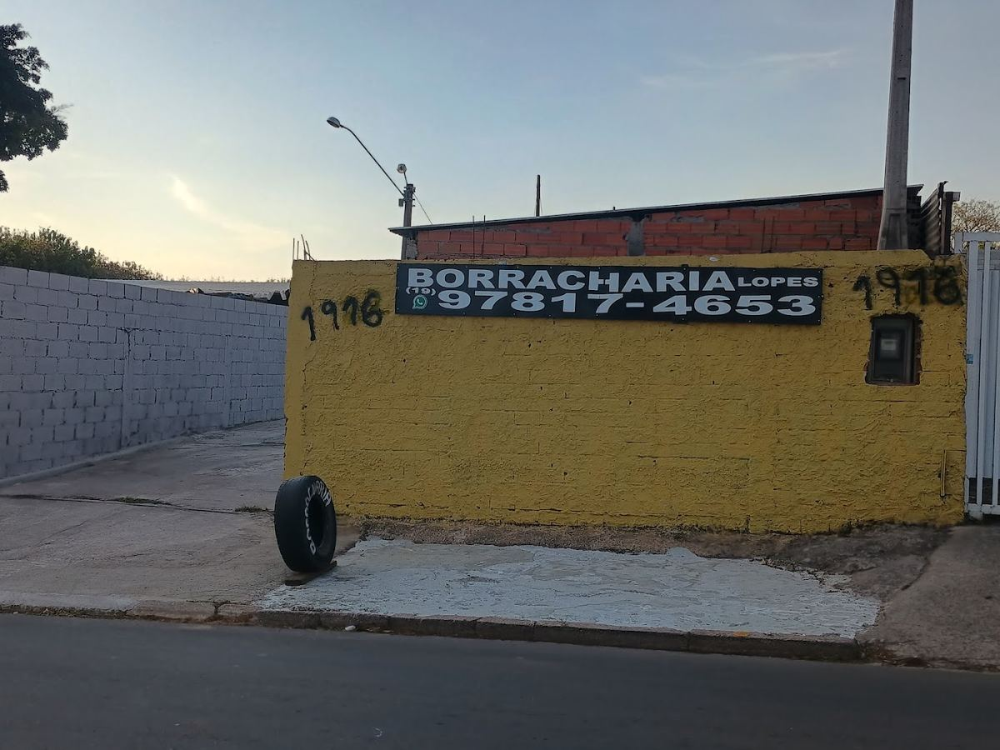
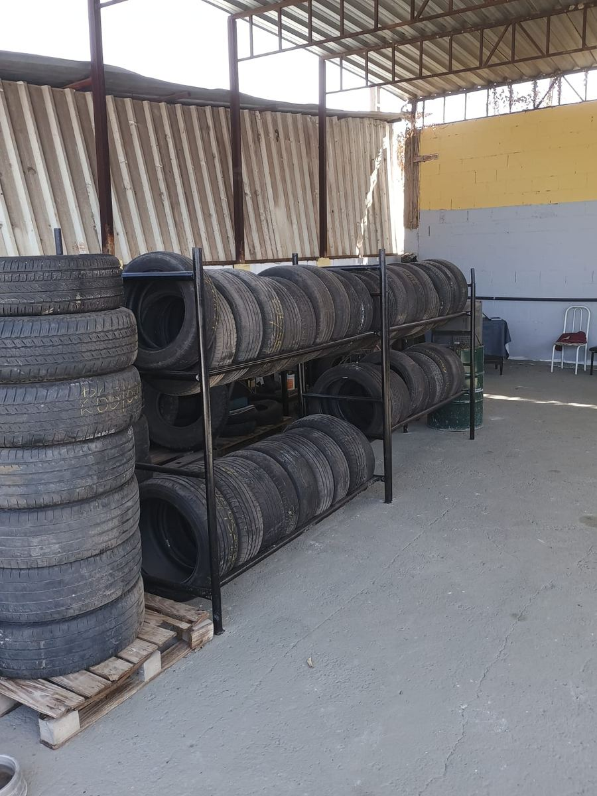

Furou? Passa no muro amarelo.
Conserto, vulcanização, alinhamento, balanceamento e pneus seminovos e recauchutados. Atende carro de passeio, utilitário e linha pesada, rápido e com preço justo.
Seg a sex 7h às 17h30 · sáb 7h30 às 12h

Qual é o seu veículo?
Conserto de furo
Prego, parafuso, corte: reparo rápido para voltar a rodar.
Alinhamento e balanceamento
Carro reto e volante sem tremer.
Troca de pneus
Montagem e desmontagem com cuidado com a roda.
Vulcanização
Recuperação de pneu danificado, quando dá.
Seminovos
Pneu com vida útil boa por um preço menor.
Pagamento fácil
Cartão, aproximação e Pix.
Caminhão e ônibus
Borracharia preparada para a linha pesada.
Recauchutados
Opção econômica para quem roda muito.
Vulcanização
Reparo de pneu grande sem precisar trocar.
Conserto
Furo e corte resolvidos no pátio.
Atendimento no local
Consulte pelo WhatsApp se dá para ir até você.
Pátio amplo
Espaço para manobrar e aguardar.

Seminovo e recauchutado
Para quem precisa trocar sem gastar com pneu novo.
- 1Mande a medida do pneu (está escrita na lateral, tipo 175/70 R14).
- 2A borracharia confere o que tem no estoque e responde.
- 3É só passar e trocar, sem marcar hora.
Rápido, honesto e com capricho
O Edson fez um reparo no pneu do meu carro a um preço justo e muito rápido.Avaliação no Google
Ótimo local, ótimo atendimento, melhor preço da região para carros leves e transporte.Ed · Google
Precisei consertar dois pneus furados. Além de rápido e eficiente, foi muito atencioso também.Wagner · Google
Fácil de achar
| Segunda a sexta | 7h às 17h30 |
| Sábado | 7h30 às 12h |
| Domingo | Fechado |
R. Antônio Rodrigues de Carvalho, 1916 · Vila Proost de Souza, Campinas (SP)
WhatsApp (19) 99206-3265 · Instagram